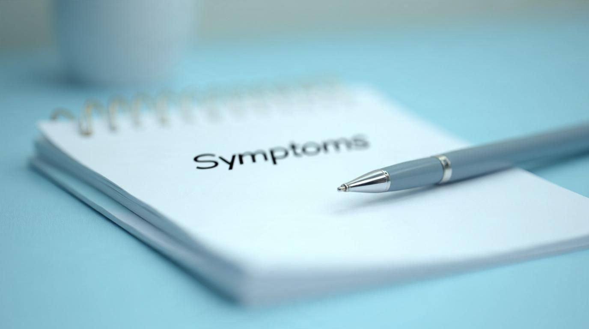

한 줄 답변
사상체질은 근거가 제한적인 한방 이론이며 판단 기준과 관찰 방법이 달라 결과가 다르게 나올 수 있으므로, 하나의 결과에 얽매이기보다 생활과 증상을 함께 보는 참고 자료로 받아들이시면 됩니다.
사상체질은 근거가 제한적인 한방 이론이며 판단 기준과 관찰 방법이 달라 결과가 다르게 나올 수 있으므로, 하나의 결과에 얽매이기보다 생활과 증상을 함께 보는 참고 자료로 받아들이시면 됩니다.
다른 곳에서 체질을 들었는데 지금 한의원에서는 다르게 말해서 혼란스러운 경우가 있습니다. 이는 생각보다 흔한 일입니다.
결과가 다르게 나오는 이유
- 질문지, 체형 관찰, 면담 중 어떤 방법을 중심으로 보는지가 다를 수 있습니다.
- 그날의 컨디션, 복용 중인 약, 계절에 따라 답변이 달라질 수 있습니다.
- 사람이 판단하는 부분이 있어서 표현에 차이가 생깁니다.
- 사상체질은 근거가 제한적인 한방 이론이라 표준화된 정확도로 설명하기 어렵습니다.

어떻게 받아들이면 좋은가
결과가 다르다면 어느 쪽이 틀렸다고 단정하기보다 두 가지를 모두 참고 자료로 두고 지금 증상과 생활을 중심으로 이야기하시는 것이 좋습니다.
한의원에서 함께 살필 수 있는 경우
- 이전 체질 상담 내용을 알고 계시면 말씀해 주세요. 어떤 점에서 그렇게 판단했는지 함께 보겠습니다.
- 체질 이야기에서 불안이 생겼다면 그 부분부터 정리해서 설명합니다.
- 한약이나 음식 선택에서 체질적 경향은 참고 정보 하나로만 함께 고려합니다.
진료실에서 이야기를 들은 뒤 어떤 방법이 맞을지 함께 정합니다.

알아 두면 좋은 점
체질이 맞지 않는다는 이유로 복용 중이던 약을 임의로 중단하지 마세요. 약은 처방한 의사와 상의해서 조정하셔야 합니다.
자주 묻는 질문
체질이 바뀌기도 하나요?
체질을 어떻게 이해하느냐에 따라 의견이 갈립니다. 한 번의 결과를 고정된 것으로 보지 않습니다.
어느 체질이라고 단정해 주지 않아도 괜찮나요?
괜찮습니다. 체질을 단정하지 않고 증상과 생활 중심으로 살피는 방식도 있습니다.
체질 검사를 여러 번 받아도 되나요?
가능하지만 결과가 달라질 수 있다는 점을 염두에 두시길 권합니다.
이 글은 일반적인 건강 정보이며 개인의 진단이나 치료를 대신하지 않습니다. 증상이 있거나 복용 중인 약이 있다면 진료를 통해 확인하세요. 치료 효과는 개인마다 다를 수 있습니다.
지난 이야기부터 이어서 묻습니다
좋은꿈참사랑한의원 노량진점은 재진 때 지난번 이야기부터 이어서 여쭙니다. 진료시간과 예약은 오시는 길에서 확인하세요.
좋은꿈참사랑한의원 노량진점은 재진 때 지난번 이야기부터 이어서 여쭙니다. 진료시간과 예약은 오시는 길에서 확인하세요.